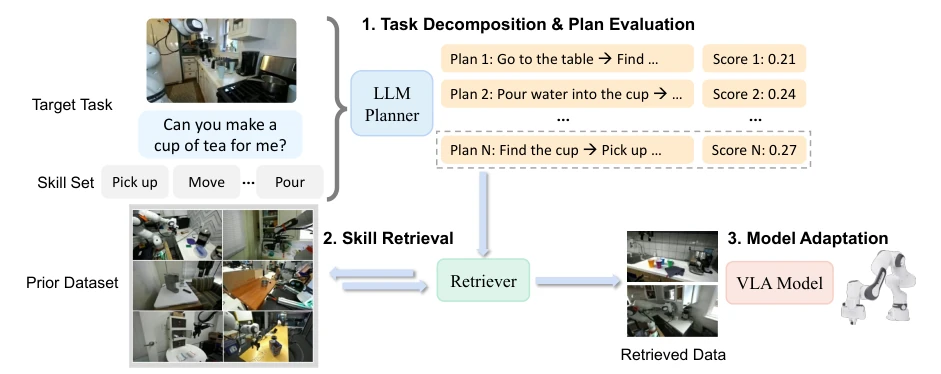
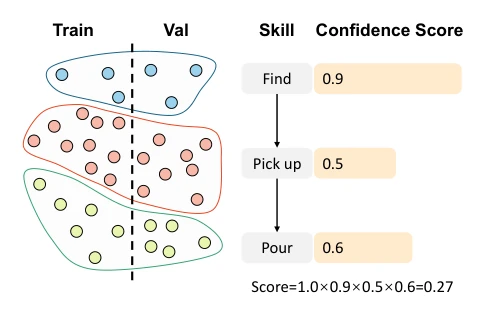
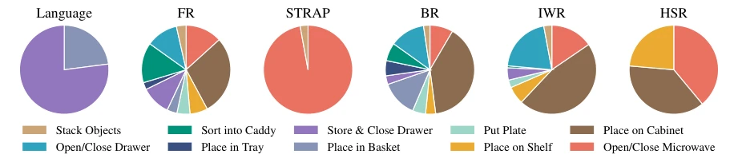
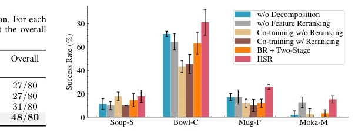

This paper feeds some "structured" data to the data-hungry VLA models. Although "hierarchical skill retrieval" sounds advanced, essentially it relies on LLMs to decompose tasks and retrieve old data. The benefit is that it indeed solves the difficulty of matching long-horizon tasks, with LIBERO and real-robot experiments both increasing by 10%-20%. However, there are also drawbacks: Will LLM planning hallucinate? Is skill clustering relying on text embeddings accurate enough? Although two-stage training is stable, the computational cost is not low. Overall, it is a pragmatic improvement, not a disruptive innovation. It proves that when data is scarce, breaking large tasks into small skills is more effective than brute-force searching entire demonstrations, but over-reliance on LLM planning capabilities may become a new bottleneck, and real-robot transfer still needs to overcome cross-robot differences.
When VLA models are fine-tuned on downstream tasks, data scarcity is a critical flaw. Existing retrieval methods such as Behavior Retrieval [10] and Importance Weighted Retrieval [11] mainly rely on visual or action similarity, ignoring the high-level semantic structure of tasks. For long-horizon tasks like "making tea", directly retrieving full demonstrations is difficult, but low-level skills (such as "grasping") are universal. Although STRAP [14] performs sub-trajectory retrieval, it is based on visual similarity and struggles to capture semantics. Therefore, a method that can utilize task hierarchical structure and retrieve data at the skill level is needed to solve the problem of low skill reuse rate in long-horizon tasks. Existing methods often misjudge similar actions as relevant skills, leading to high noise in retrieved data and failing to effectively assist VLA in adapting to new tasks.
HSR 框架分三步。首先，对先验数据集进行技能聚类，并用 VLA 模型在验证集上的 BC loss 评估技能可靠性，生成技能置信度。LLM 根据目标任务生成计划，结合语义评分和技能置信度打分，选出最佳分解。其次，混合检索：先用语言相似度召回候选，再用行为特征（VAE 编码）重排，确保低层行为兼容。最后，两阶段适应：先在检索数据上预训练学习通用技能，再用目标数据微调。这种方法避免了直接混合训练导致的噪声干扰，让模型先学通用技能再学特定任务，通过分离通用技能获取与特定任务适应，提升了数据利用效率。
The HSR framework is divided into three steps. First, perform skill clustering on the prior dataset, and evaluate skill reliability using the VLA model's BC loss on the validation set to generate skill confidence. The LLM generates a plan based on the target task, combining semantic scoring and skill confidence scoring to select the best decomposition. Second, hybrid retrieval: first recall candidates using language similarity, then rerank using behavior features (VAE encoding) to ensure low-level behavior compatibility. Finally, two-stage adaptation: first pretrain on retrieved data to learn general skills, then fine-tune on target data. This method avoids noise interference caused by direct mixed training, allowing the model to learn general skills first and then specific tasks, improving data utilization efficiency by separating general skill acquisition and specific task adaptation.

Fig. 2: Overview of the Proposed HSR Framework. HSR identifies existing skills in the prior dataset based on task-instruction clustering. Given a long-horizon target task, 1. HSR first decomposes the task into several subtasks, evaluates and selects the plan with the highest score; 2. for each subtask, HSR retrieves data based on the subtask instruction, and further reranks using representative demonstrations from the target task to filter out low-consistency data; 3. HSR first pretrains the policy on retrieved data to learn general skills, and then finetunes it on task-related data to adapt to the target task.

Fig. 3: Illustration of Plan Evaluation. We first cluster Dprior into reusable skills. Each clustered skill is then evaluated by finetuning a pretrained VLA model on the training split and measuring the BC loss on its validation set. The resulting loss serves as a lightweight proxy for skill reliability, enabling efficient plan evaluation without costly environment rollouts.
Tested on LIBERO simulation and xArm real-robot tasks. Baselines include BC, BR, IWR, STRAP, etc. The metric is success rate. HSR improved by an average of 10.3% on LIBERO and 21.3% on real-robot. Ablation experiments show that task decomposition and feature reranking are both critical. Two-stage training outperforms single-stage joint training. In real-robot tasks, long-horizon tasks (such as tea making) show the most obvious improvement, indicating that hierarchical retrieval effectively utilizes prior skills. In the Cup-Tea task, BC has only 15% success rate, while HSR reaches 45%, a significant gap. In LIBERO, for the Bowl-C task, HSR is the only method superior to pure behavior cloning, proving its advantage in complex composite tasks.

Fig. 7: Comparison of Retrieved Data. Distribution of retrieved data for the task “put the yellow and white mug in the microwave and close it”. HSR effectively retrieves demonstrations across subtasks covering both object-placing and microwave-closing skills.
其他图片Other Figures

Fig. 5: Results of Ablation Studies. We conduct ablation studies on four LIBERO tasks to evaluate the effectiveness of key components of HSR, in- cluding task decomposition, feature reranking, and the pretraining-finetuning strategy. The results show that each component improves performance, with the full HSR framework achieving the highest success rates across all tasks.